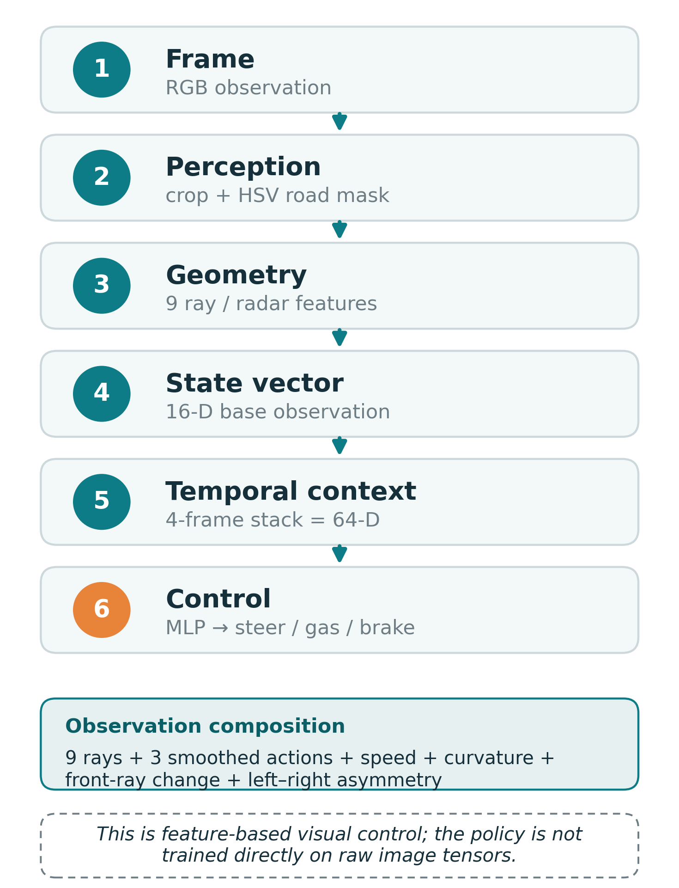

PPO Completed Baseline
Validated eval: 938.87 +/- 7.86 @ 500,000
Completed 500K baseline preview from the saved best demo clip.
Feature-Based Image Processing and Reinforcement Learning for CarRacing-v3. Compact road-geometry features are evaluated with PPO and SAC.
938.51 +/- 4.88 @ 400,000
Partial 400K best-checkpoint, not a completed 500K run.
Validated eval: 938.87 +/- 7.86 @ 500,000
Completed 500K baseline preview from the saved best demo clip.
Validated eval: 938.51 +/- 4.88 @ 400,000
Partial 400K best-checkpoint preview, not a full-length SAC run.

PPO is the completed 500K baseline. SAC is a partial 400K fast-result branch and is not presented as outperforming PPO. The comparison is not compute-equivalent, this project package does not include raw-pixel CNN policy training, and it makes no environment-completion claim for CarRacing-v3.